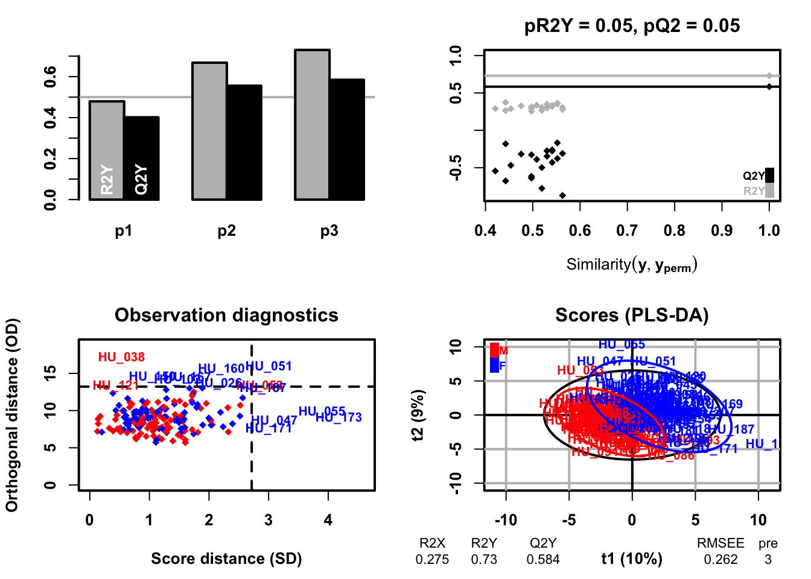
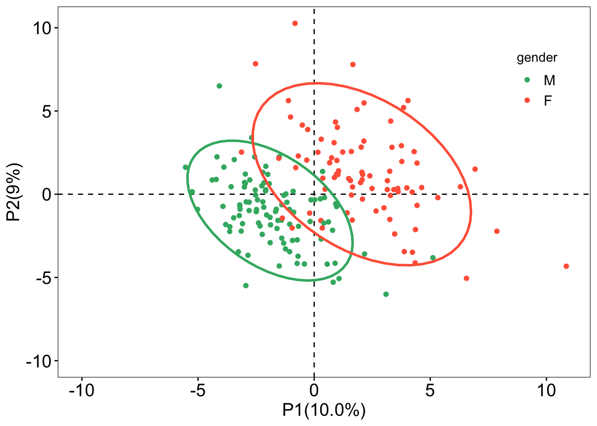
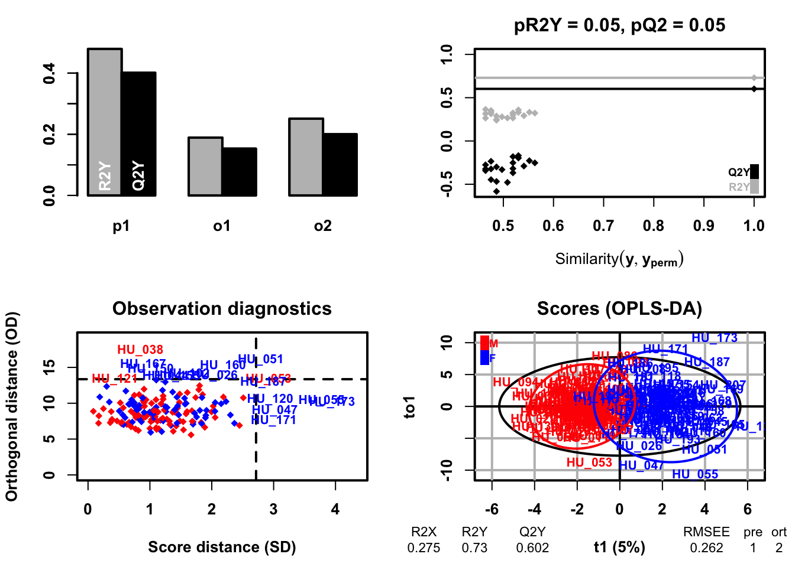
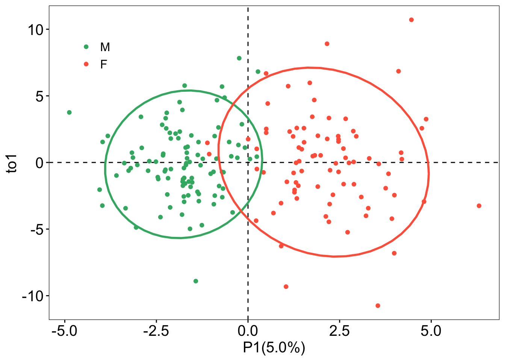
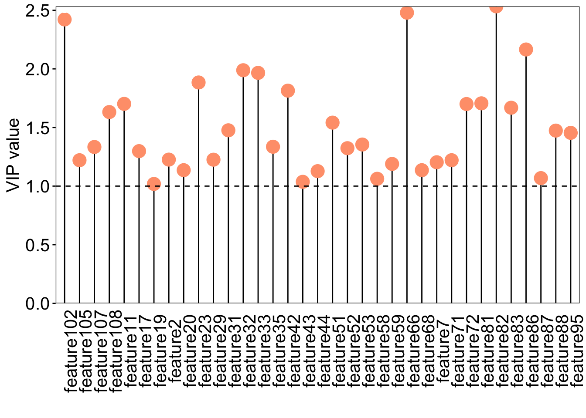

PCA (also called eigenvector analysis) is unsupervised pattern recognition technique mostly utilized as data reduction and modelling technique. It determines the degree or extent to which variables are related. Large data of many variables are unavoidably superfluous and overlap, the use of correlation matrix generally quantifies these anomalies by extracting the eigenvalues and eigenvectors from the square matrix originated by multiplying the data matrix. The purpose of PCA is to find orthogonal variables that capture the maximum amount of variance in the data without considering class information. PCA provide the information about the relationships and patterns and help identify major sources of variation and potential outliers
PLS discriminant analysis is a supervised technique that uses the PLS algorithm to explain and predict the membership of observations to several classes using quantitative or qualitative explanatory variables or parameters. The purpose of PLS-DA is to identify the latent variables that maximize the discrimination between the predefined classes in the data. PLS-DA focus on the the separation of classes in the dataset and provide information on important features that serparate classes.
PLS-DA
183 samples x 109 variables and 1 response
standard scaling of predictors and response(s)
R2X(cum) R2Y(cum) Q2(cum) RMSEE pre ort pR2Y pQ2
Total 0.275 0.73 0.584 0.262 3 0 0.05 0.05

### sample scores plotsample_score <- plsda@scoreMN |>as.data.frame() |>mutate(gender = sacurine[["sampleMetadata"]][["gender"]])### plotggplot(sample_score, aes(x = p1, y = p2, color = gender)) +geom_hline(yintercept =0, linetype ="dashed", linewidth =0.5) +geom_vline(xintercept =0, linetype ="dashed", linewidth =0.5) +geom_point() +geom_point(aes(x =-10, y =-10), color ="white") +labs(x ="P1(10.0%)", y ="P2(9%)") +stat_ellipse(level =0.95, linetype ="solid", size =1, show.legend =FALSE ) +scale_color_manual(values =c("#3CB371", "#FF6347")) +theme_bw() +theme(legend.position =c(0.9, 0.8),legend.text =element_text(color ="black", size =12, family ="Arial", face ="plain"),panel.background =element_blank(),panel.grid =element_blank(),axis.text =element_text(color ="black", size =15, family ='Arial', face ="plain"),axis.title =element_text(color ="black", size =15, family ='Arial', face ="plain"),axis.ticks =element_line(color ="black") )
Warning: Using `size` aesthetic for lines was deprecated in ggplot2 3.4.0.
ℹ Please use `linewidth` instead.

### find the discrinminative variable that VIP greater than 1### VIP scores plotvip_score <-as.data.frame(plsda@vipVn)colnames(vip_score) <-"vip"vip_score$metabolites <-rownames(vip_score)vip_score <- vip_score[order(-vip_score$vip), ]vip_score$metabolites <-factor( vip_score$metabolites, levels = vip_score$metabolites)loading_score <- plsda@loadingMN |>as.data.frame()loading_score$metabolites <-rownames(loading_score)all_score <-merge(vip_score, loading_score, by ="metabolites")all_score$cat <-paste("feature", 1:nrow(all_score), sep ="")### plotggplot(all_score[all_score$vip >=1, ], aes(x = cat, y = vip)) +geom_segment(aes(x = cat, xend = cat,y =0, yend = vip)) +geom_point(shape =21, size =5, color ="#008000", fill ="#008000")+geom_point(aes(1, 2.5), color ="white") +geom_hline(yintercept =1, linetype ="dashed") +scale_y_continuous(expand =c(0, 0)) +labs(x ="", y ="VIP value") +theme_bw() +theme(legend.position ="none",legend.text =element_text(color ="black", size =12, family ="Arial", face ="plain"),panel.background =element_blank(),panel.grid =element_blank(),axis.text =element_text(color ="black", size =15, family ='Arial', face ="plain"),axis.text.x =element_text(angle =90),axis.title =element_text(color ="black", size =15, family ='Arial', face ="plain"),axis.ticks =element_line(color ="black"),axis.ticks.x =element_blank() )
OPLS-DA
183 samples x 109 variables and 1 response
standard scaling of predictors and response(s)
R2X(cum) R2Y(cum) Q2(cum) RMSEE pre ort pR2Y pQ2
Total 0.275 0.73 0.602 0.262 1 2 0.05 0.05

### sample scores plotsample_score <- oplsda@scoreMN |>as.data.frame() |>mutate(gender = sacurine[["sampleMetadata"]][["gender"]],o1 = oplsda@orthoScoreMN[, 1] )### plotggplot(sample_score, aes(p1, o1, color = gender)) +geom_hline(yintercept =0, linetype ="dashed", size =0.5) +geom_vline(xintercept =0, linetype ="dashed", size =0.5) +geom_point() +#geom_point(aes(-10,-10), color = 'white') +labs(x ="P1(5.0%)", y ="to1") +stat_ellipse(level =0.95, linetype ="solid", size =1, show.legend =FALSE) +scale_color_manual(values =c("#3CB371", "#FF6347")) +theme_bw() +theme(legend.position =c(0.1, 0.85),legend.title =element_blank(),legend.text =element_text(color ="black", size =12, family ="Arial", face ="plain"),panel.background =element_blank(),panel.grid =element_blank(),axis.text =element_text(color ="black", size =15, family ="Arial", face ="plain"),axis.title =element_text(color ="black", size =15, family ="Arial", face ="plain"),axis.ticks =element_line(color ='black'))

### VIP scores plotvip_score <-as.data.frame(oplsda@vipVn)colnames(vip_score) <-"vip"vip_score$metabolites <-rownames(vip_score)vip_score <- vip_score[order(-vip_score$vip), ]vip_score$metabolites <-factor( vip_score$metabolites, levels = vip_score$metabolites)loading_score <- oplsda@loadingMN |>as.data.frame()loading_score$metabolites <-rownames(loading_score)all_score <-merge(vip_score, loading_score, by ="metabolites")all_score$cat <-paste("feature", 1:nrow(all_score), sep ="")### plotggplot(all_score[all_score$vip >=1, ], aes(x = cat, y = vip)) +geom_segment(aes(x = cat, xend = cat,y =0, yend = vip)) +geom_point(shape =21, size =5, color ="#FFA07A", fill ="#FFA07A")+geom_point(aes(1, 2.5), color ="white") +geom_hline(yintercept =1, linetype ="dashed") +scale_y_continuous(expand =c(0, 0)) +labs(x ="", y ="VIP value") +theme_bw() +theme(legend.position ="none",legend.text =element_text(color ="black", size =12, family ="Arial", face ="plain"),panel.background =element_blank(),panel.grid =element_blank(),axis.text =element_text(color ="black", size =15, family ='Arial', face ="plain"),axis.text.x =element_text(angle =90),axis.title =element_text(color ="black", size =15, family ='Arial', face ="plain"),axis.ticks =element_line(color ="black"),axis.ticks.x =element_blank() )

Predict models
### OPLS-DA model trainingoplsda.2<-opls(dataMatrix, genderFc, predI =1, orthoI =NA,subset ="odd")
Warning: 'permI' set to 0 because train/test partition is selected
OPLS-DA
92 samples x 109 variables and 1 response
standard scaling of predictors and response(s)
R2X(cum) R2Y(cum) Q2(cum) RMSEE RMSEP pre ort
Total 0.26 0.825 0.608 0.213 0.341 1 2
![]()